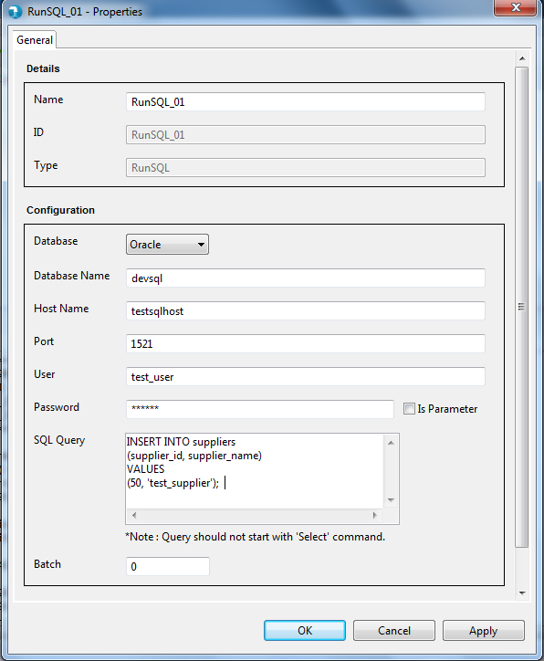
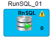
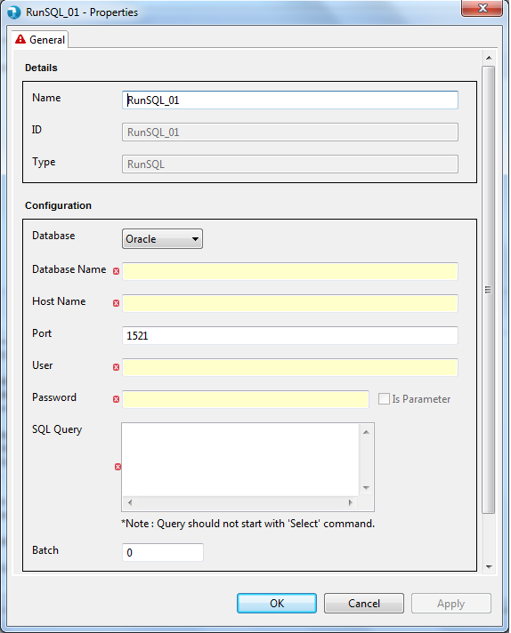
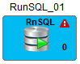

if user selects "Parameter", provide a textbox where user can input the Database Name.

Run Sql Properties
Properties for the Run Sql component can be viewed by Double click component on canvas. The properties contain a 'General' tab. Common and mandatory properties are present in the General tab.

if user selects "Parameter", provide a textbox where user can input the Database Name.
The Run Sql components applies validations to the mandatory fields. Upon placing the Run Sql component on job canvas for the first time (from component palette), the component shows up a warning icon as mandatory properties are not provided.
The properties window also displays error icon on mandatory fields if it has an incorrect value. The error icon is displayed on the tab as well, if any of the field within the tab has some error.
If the properties window has some error even after user visit's it once, then the warning icon on the Run Sql component on the job canvas changes to error icon. This error icon is removed only when all the mandatory fields are supplied with correct values.
